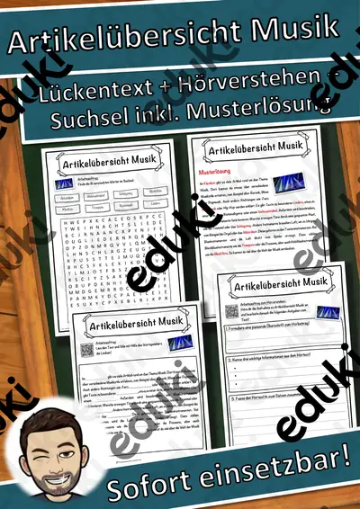
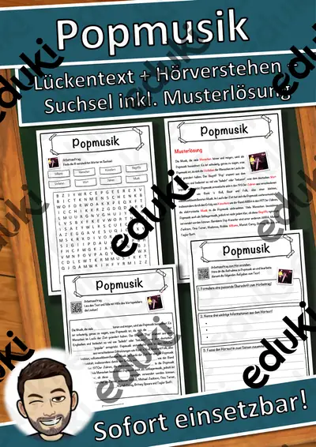
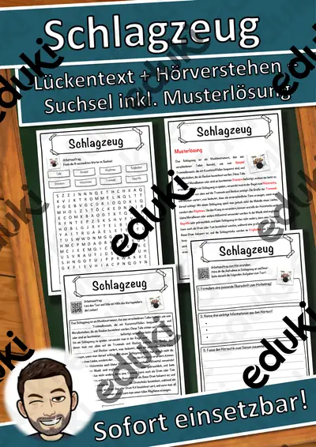

Instrumente, Rhythmus und Musik hören: Arbeitsblätter für Klasse 1–6 (Musik)
Musik erleben und verstehen: Instrumente kennenlernen, Rhythmus spielen, Musikrichtungen unterscheiden und Klanggeschichten erfinden. Der Musikunterricht der Grundschule arbeitet handlungsorientiert.
Zum Themenkern zählen Instrumentenfamilien, Rhythmus und Noten. Als Vertiefung bieten sich Klanggeschichte und Chor an, am Ende steht oft Musikrichtungen.
Im Fach Musik gehört das Thema nach den Lehrplänen der Länder zum festen Programm, überwiegend in den Klassen 1 bis 6. Die Kinder erkennen Instrumente am Klang und musizieren gemeinsam.
Eine Reihe zu Instrumente, Rhythmus und Musik hören lässt sich so gliedern: erst Instrumentenfamilien erarbeiten, dann Rhythmus anwenden, später Klanggeschichte und Chor vertiefen. Zu jedem Material gehört eine Musterlösung, die Korrektur und Selbstkontrolle erleichtert. Zur Differenzierung eignen sich die Lesespurgeschichten mit ihren drei Niveaustufen.
Die Auswahl zum Thema umfasst derzeit 23 Titel, zum Beispiel Orff-Instrumente, Karneval der Tiere und Die Blaskapelle. Dazu zählen 7 Lesespurgeschichten und 15 Lückentexte mit Hörverstehen für Klasse 1–7. Ein Instrumenten-Hörrätsel mit Klangbeispielen macht zehn Minuten Konzentration zum Spiel.
Das gehört zum Thema
Passende Arbeitsblätter und Materialpakete

Karneval der Tiere – Musik aus dem Zoo – Lesespurgeschichte mit Rätselaufgaben (Klasse 1)

Die Blaskapelle – Musik im Freien – Lesespurgeschichte mit Rätselaufgaben (Klasse 3)

Dirigieren – Musik mit den Händen führen – Lesespurgeschichte mit Rätselaufgaben (Klasse 6)

Instrumente selbst bauen – Musik aus Dose und Karton – Lesespurgeschichte mit Rätselaufgaben (Klasse 1)

Eine Klanggeschichte – Musik erzählt vom Wald – Lesespurgeschichte mit Rätselaufgaben (Klasse 1)

Die Stimme und der Chor – wie wir singen – Lesespurgeschichte mit Rätselaufgaben (Klasse 6)

Takt und Rhythmus – Lesespurgeschichte mit Rätselaufgaben (Klasse 3)

Panflöte Lückentext mit Wortspeicher Hörverstehen und Suchsel

E-Gitarre Lückentext mit Wortspeicher Hörverstehen und Suchsel

Artikelübersicht Musik Lückentext mit Wortspeicher Hörverstehen und Suchsel

Popmusik Lückentext mit Wortspeicher Hörverstehen und Suchsel

Schlagzeug Lückentext mit Wortspeicher Hörverstehen und Suchsel

Trompete Lückentext mit Wortspeicher Hörverstehen und Suchsel

Gitarre Lückentext mit Wortspeicher Hörverstehen und Suchsel

Flöte Lückentext mit Wortspeicher Hörverstehen und Suchsel

Elektronische Musik Lückentext mit Wortspeicher Hörverstehen und Suchsel

Musikrichtung Lückentext mit Wortspeicher Hörverstehen und Suchsel

Musik Lückentext mit Wortspeicher Hörverstehen und Suchsel

Klavier Lückentext mit Wortspeicher Hörverstehen und Suchsel

Country-Musik Lückentext mit Wortspeicher Hörverstehen und Suchsel

Geige Lückentext mit Wortspeicher Hörverstehen und Suchsel

Chor Lückentext mit Wortspeicher Hörverstehen und Suchsel

Orff-Instrumente – Mal-, Hör- und Forscherheft mit Postern, Kl. 1–4
Häufige Fragen
Für welche Klassenstufe passen die Arbeitsblätter zu Instrumente, Rhythmus und Musik hören?
Passend sind Klasse 1–7. Von den 23 Titeln wenden sich die meisten an Klasse 6, einige lassen sich differenzierend auch in benachbarten Stufen nutzen.
Welche Inhalte decken die Materialien zu Instrumente, Rhythmus und Musik hören ab?
Die Materialien arbeiten an Instrumentenfamilien, Rhythmus und Noten und gehen dann weiter zu Klanggeschichte, Chor und Musikrichtungen. Vorab lohnt ein Blick in den Lehrplan des eigenen Bundeslandes.
Wie setze ich Instrumente, Rhythmus und Musik hören im Unterricht ein?
Ein Instrumenten-Hörrätsel mit Klangbeispielen macht zehn Minuten Konzentration zum Spiel. So entsteht aus den Blättern eine kleine Einheit, die sich auf zwei bis drei Stunden verteilen lässt.
Mehr Material nach Fach und Klasse
- Alle Materialien Deutsch
- Arbeitsblätter Deutsch Klasse 1
- Arbeitsblätter Deutsch Klasse 2
- Arbeitsblätter Deutsch Klasse 3
- Arbeitsblätter Deutsch Klasse 4
- Arbeitsblätter Deutsch Klasse 5
- Arbeitsblätter Deutsch Klasse 6
- Unterrichtsmaterial Klasse 1
- Unterrichtsmaterial Klasse 2
- Unterrichtsmaterial Klasse 3
- Unterrichtsmaterial Klasse 4
- Unterrichtsmaterial Klasse 5
- Unterrichtsmaterial Klasse 6
Verwandte Lehrplanthemen
- Komponisten und Musikgeschichte (Musik, Klasse 3–10)
- Addition und Subtraktion (Mathematik, Klasse 1–4)
- Basteln, Falten und Werken (Kunst, Klasse 1–6)
- Bauernhof und Nutztiere (Sachunterricht, Klasse 1–4)